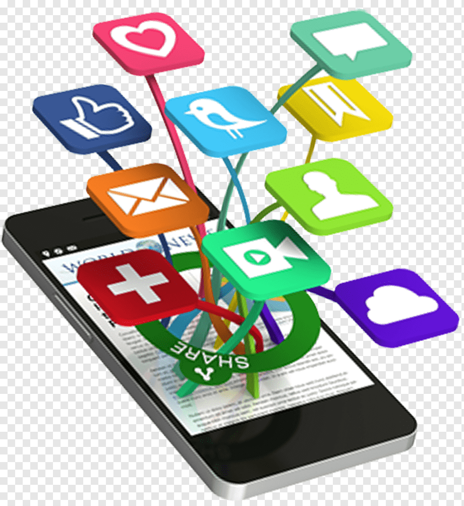
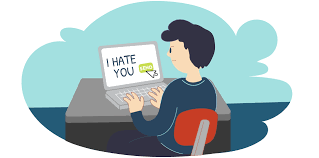
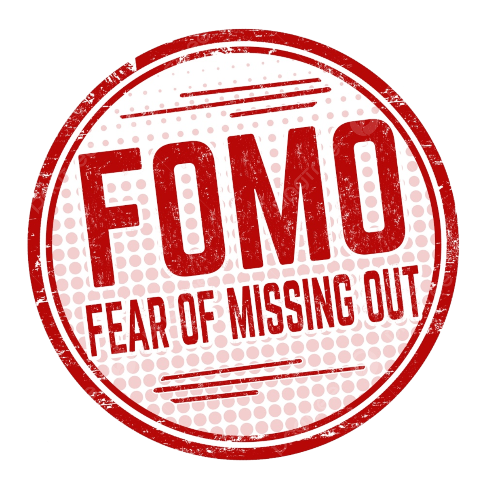
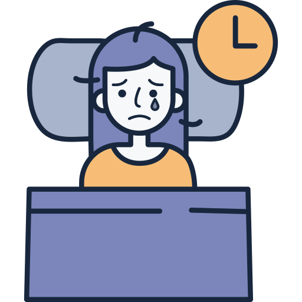
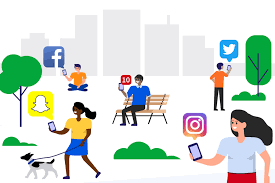
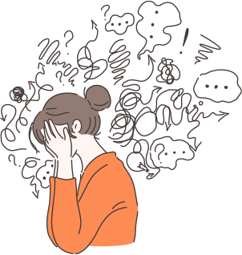

1. Kecanduan Media Sosial
Banyak remaja yang sulit melepaskan diri dari ponsel dan terus-menerus mengecek media sosial, bahkan saat belajar, makan, atau berkumpul bersama keluarga. Ketergantungan ini mengganggu fokus, menurunkan konsentrasi, dan berpotensi menyebabkan penurunan prestasi akademik. Selain itu, penggunaan yang berlebihan juga dapat memicu kecemasan, depresi, dan stres akibat tekanan untuk selalu aktif dan mengikuti tren.
2. Cyberbullying dan Pelecehan Online
Media sosial sering menjadi tempat terjadinya cyberbullying, di mana komentar jahat, hinaan, atau ancaman dapat dengan mudah menyebar. Korban cyberbullying sering kali mengalami penurunan kepercayaan diri dan masalah kesehatan mental. Sayangnya, tanpa disadari, beberapa remaja juga ikut menjadi pelaku dengan menganggap tindakan tersebut sebagai sesuatu yang biasa di dunia maya.
3. FOMO (Fear of Missing Out)
FOMO adalah rasa takut ketinggalan tren atau kegiatan yang sedang viral di media sosial. Banyak remaja yang merasa perlu terus memantau media sosial agar tetap update dan tidak merasa tertinggal. Sayangnya, hal ini dapat memicu stres dan kecemasan berlebihan, terutama ketika mulai membandingkan kehidupan sendiri dengan orang lain yang tampak lebih menarik di media sosial.
4. Gangguan Tidur
Kebiasaan menjelajahi media sosial sebelum tidur menjadi salah satu penyebab utama gangguan tidur di kalangan remaja. Cahaya biru dari layar ponsel dapat menghambat produksi hormon melatonin yang berperan dalam mengatur siklus tidur. Akibatnya, banyak yang mengalami kesulitan tidur, merasa lelah di pagi hari, dan kehilangan fokus dalam menjalani aktivitas sehari-hari.
5. Penurunan Interaksi Sosial
Semakin banyak remaja yang lebih nyaman berkomunikasi melalui pesan teks dibandingkan berbicara langsung. Kebiasaan ini dapat menghambat kemampuan komunikasi dalam kehidupan nyata. Kemampuan berbicara dan berinteraksi secara langsung merupakan keterampilan penting yang dibutuhkan dalam dunia akademik maupun profesional.
6. Dampak pada Citra Diri
Banyak remaja merasa tertekan oleh standar kecantikan dan kesuksesan yang sering ditampilkan di media sosial. Foto-foto yang telah melalui banyak proses edit dan filter menciptakan ekspektasi yang tidak realistis. Akibatnya, muncul rasa tidak percaya diri dan perasaan tidak cukup baik karena terus-menerus membandingkan diri dengan orang lain.
Kesimpulan
Permasalahan media sosial di kalangan remaja bukanlah hal sepele. Kesadaran dan pemahaman mengenai dampak negatifnya dapat membantu dalam mengontrol penggunaan media sosial agar tetap memberikan manfaat tanpa merugikan kesehatan mental dan kehidupan sosial.